COMSOL Simulation of Action Potential Propagation (FitzHugh-Nagumo Model)
Jose Maria Perez-Macias
Bioelectromagnetism & Finite Element Modeling (Fall 2016) — BioMediTech & Department of Electronics and Communications Engineering, Tampere University of Technology (TUT), Finland
Educational Summary: This page presents an educational computational study simulating how biological action potentials propagate along an unmyelinated nerve axon. Using COMSOL Multiphysics 5.2a, the nerve dynamics are implemented via the FitzHugh-Nagumo (FHN) reaction-diffusion partial differential equation (PDE) coupled to an electrostatic extracellular medium. This document details the mathematical formulation, FEM geometry, tetrahedral mesh design, stimulus pulse experiments, and animated video recordings.
Note on model files: Rather than distributing proprietary, commercial 70+ MB .mph binary files (which require paid COMSOL licenses to inspect), this page provides the complete mathematical physics, boundary conditions, parameter tables, and mesh designs so students and researchers can reproduce the model in any FEM framework (COMSOL, FEniCS, OpenCMISS, or FreeFEM).
1. Introduction: Electrophysiology & The "All-or-Nothing" Principle
Neurons communicate via electrical impulses termed action potentials. In biological nerve fibers, these impulses are generated by voltage-gated ionic channels (principally sodium $\text{Na}^+$ and potassium $\text{K}^+$) embedded across the cell membrane. The foundational biophysical description was formulated by Alan Hodgkin and Andrew Huxley in 1952 using four nonlinear differential equations describing individual ionic conductances.
While Hodgkin-Huxley (HH) provides high biological fidelity, its four coupled nonlinear equations can be computationally demanding for large-scale 3D finite element field simulations. In 1961, Richard FitzHugh introduced a simplified two-variable phase-plane reduction of the HH model, isolating the mathematical essence of excitability:
- A fast excitation variable ($u_1$, representing membrane voltage), exhibiting positive feedback and cubic non-linearity.
- A slow recovery variable ($u_2$, representing ionic channel deactivation/refractoriness), providing negative feedback and restoring the resting state.
In 1962, J. Nagumo, S. Arimoto, and S. Yoshizawa realized this mathematical model physically as an active pulse transmission electrical transmission line incorporating tunnel diodes (which possess the required N-shaped negative differential resistance characteristic).
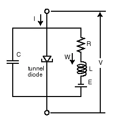
Figure 1: Equivalent circuit diagram of the active nerve transmission line using tunnel diodes (Nagumo et al., 1962).
Key Electrophysiological Phenomena Demonstrated
- The "All-or-Nothing" Threshold: A sub-threshold stimulus decays electrotonically along the axon without triggering a wave. Once a stimulus exceeds the critical threshold voltage ($\alpha$), a full-amplitude action potential is unleashed. Further increasing stimulus amplitude does not increase the action potential spike height.
- Frequency Coding: Because individual action potential spikes have constant amplitude, the nervous system cannot encode stimulus intensity by voltage height. Instead, biological sensory pathways encode signal strength into the firing rate (frequency) of action potentials.
- Refractory Period Limits: Immediately following an action potential, the nerve membrane enters an absolute refractory period during which no new spike can be initiated regardless of stimulus strength. This sets a fundamental physiological upper bound on neuronal firing frequency (typically 200–300 Hz in biological tissue, corresponding to a refractory recovery window of 3–5 ms).
- Conduction Velocity & Geometry: In unmyelinated fibers (like the squid giant axon or earthworm median giant fiber), conduction speed is proportional to $\sqrt{d}$ (axon diameter). Vertebrates evolved myelin sheaths to achieve high conduction velocities (up to 120 m/s) via saltatory conduction from node to node without requiring massive axon diameters.
2. Governing Mathematical Physics (Reaction-Diffusion PDEs)
In COMSOL Multiphysics, the axon interior and membrane dynamics are solved using the Coefficient Form PDE module, while the surrounding fluid is solved using the Electrostatics module.
Axon Membrane Dynamics (FitzHugh-Nagumo PDEs)
The spatial-temporal evolution of the membrane excitation potential $u_1(\mathbf{x}, t)$ and the recovery variable $u_2(\mathbf{x}, t)$ along the axon domain is governed by:
$$\frac{\partial u_1}{\partial t} - \nabla \cdot (D \nabla u_1) = u_1 (u_1 - \alpha)(1 - u_1) - u_2 + I_{\text{stim}}(t)$$
$$\frac{\partial u_2}{\partial t} = \epsilon (\beta u_1 - \gamma u_2 - \delta)$$
Where:
- $u_1(\mathbf{x}, t)$: Dimensionless/scaled membrane excitation potential.
- $u_2(\mathbf{x}, t)$: Dimensionless recovery variable responsible for repolarization and the refractory period.
- $D$: Diffusion coefficient representing longitudinal cytoplasmic electrical conductivity ($D = 1$).
- $\alpha$: Excitation threshold parameter ($0 < \alpha < 1$). Stimuli that do not elevate $u_1 > \alpha$ decay to zero.
- $\epsilon$: Small timescale separation parameter ($\epsilon \ll 1$), ensuring the excitation variable changes much faster than the recovery variable.
- $\beta, \gamma, \delta$: Parameters defining the slope, intersection, and geometry of the nullclines in the $(u_1, u_2)$ phase plane.
- $I_{\text{stim}}(t)$: Time-dependent external current stimulus injected at the proximal boundary.
Extracellular Medium (Electrostatics)
The volume surrounding the axon is modeled as an isotropic conductive medium governed by Poisson’s equation for electrostatics:
$$-\nabla \cdot (\epsilon_0 \epsilon_r \nabla V) = \rho$$
Where $\epsilon_0$ is the vacuum permittivity, $\epsilon_r = 80$ is the relative permittivity of the extracellular fluid (water/saline tissue), and space charge density $\rho = 0$.
Simulation Parameters & Initial Conditions
Parameters were derived from classical electrophysiological literature and dimensionless scaled units:
| Parameter |
Symbol |
Value |
Description |
| Excitation Threshold |
$\alpha$ |
$0.1\text{ V}$ |
Minimum potential required to trigger self-sustaining depolarization |
| Timescale Separation |
$\epsilon$ |
$0.01$ |
Ratio between fast voltage changes and slow recovery kinetics |
| Phase-Plane Slope |
$\beta$ |
$0.75$ |
Coupling coefficient of excitation to recovery |
| Recovery Damping |
$\gamma$ |
$1.0$ |
Linear decay rate of the recovery variable |
| Resting Offset |
$\delta$ |
$0.0\text{ V}$ |
Resting baseline shift parameter |
| Diffusion Coefficient |
$D$ |
$1.0$ |
Axial diffusion / electrotonic conduction coefficient |
| Relative Permittivity |
$\epsilon_r$ |
$80$ |
Extracellular fluid dielectric property (saline/water) |
| Elevated Initial Potential |
$V_0$ |
$1.0\text{ V}$ |
Initial depolarization at proximal zone ($z < d$) |
| Elevated Relaxation Value |
$\nu_0$ |
$0.025\text{ V}$ |
Initial recovery state at proximal zone ($z < d$) |
| Active Initial Shift Zone |
$d$ |
$8.0\text{ m}$ |
Spatial length of initial excitation zone required to exceed threshold |
3. 3D Model Geometry & Finite Element Mesh
The 3D domain was constructed in COMSOL Multiphysics 5.2a. Biological axons vary from $1\,\mu\text{m}$ (central nervous system) to $10\text{--}25\,\mu\text{m}$ (peripheral nerves), spanning lengths thousands of times their diameter. To maintain clean numerical conditioning during PDE integration, spatial dimensions were scaled ($1\cdot 10^{-6}:1\text{ m}$):
- Axon Cylinder: Radius $r = 100\text{ cm}$ ($1.0\text{ m}$), length $L = 135\text{ m}$.
- Extracellular Medium Box: Solid domain of $10\text{ m} \times 10\text{ m} \times 170\text{ m}$ surrounding the axon cylinder.
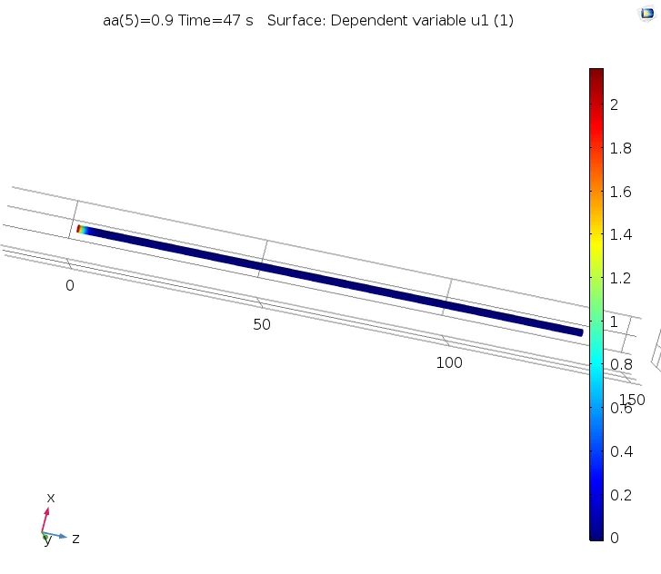
Figure 2: 3D geometry of the cylindrical axon embedded within the rectangular extracellular saline domain box.
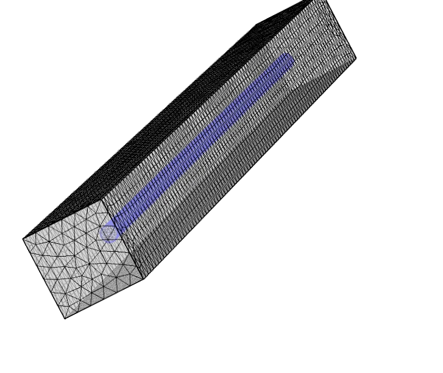
Figure 3: Physics-controlled tetrahedral finite element mesh across the entire computational domain.
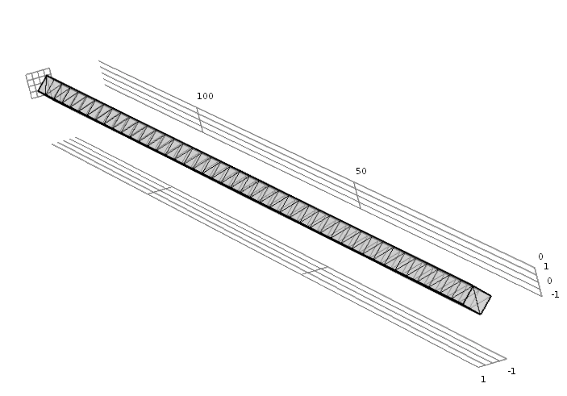
Figure 4: Detailed view of the discretized mesh elements along the interior cylinder boundary.
Boundary Conditions
- Axon Cylindrical Wall: Governed by the coupled FHN reaction-diffusion equations.
- Axon Proximal Boundary ($z = 0$): Point of external current stimulation $I_{\text{stim}}(t)$ or initial conditions.
- Axon Distal Boundary ($z = L$): Zero-flux Neumann condition ($\mathbf{n} \cdot \nabla u_1 = 0$).
- Extracellular Box Outer Walls: Zero-charge electrical insulation ($\mathbf{n} \cdot \mathbf{D} = 0$).
4. Simulation Experiments & Animated Results
Experiment 1: Autonomous Wavefront Propagation from Initial Conditions
In the first experiment, the axon was initialized without an active external current, but with an elevated proximal zone:
$$u_1(\mathbf{x}, 0) = \begin{cases} V_0 = 1.0\text{ V}, & z < d \\ 0, & z \ge d \end{cases}, \qquad u_2(\mathbf{x}, 0) = \begin{cases} \nu_0 = 0.025\text{ V}, & z < d \\ 0, & z \ge d \end{cases}$$
The spatial threshold distance $d = 8\text{ m}$ was found to be sufficient to surpass the critical activation barrier. A self-sustaining depolarization wave formed and traveled autonomously down the entire $135\text{ m}$ axon length over $t = 1\text{--}500\text{ s}$ (in $1\text{ s}$ time steps).
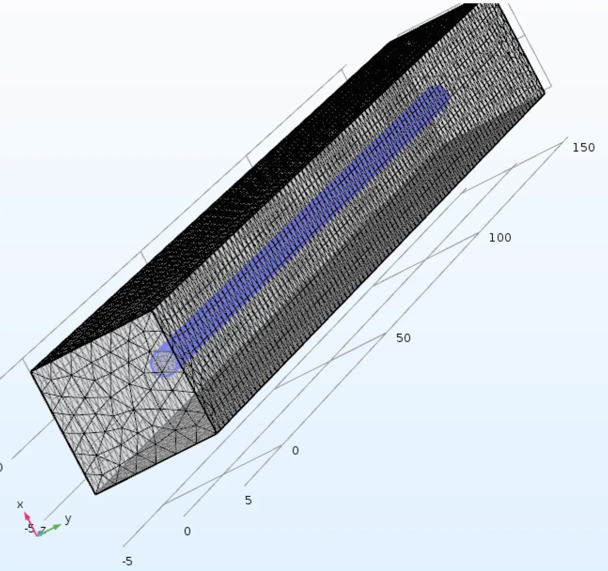
Figure 5: 3D finite element simulation in COMSOL Multiphysics showing the active depolarization wavefront and extracellular electric potential distribution.
Voltage probes were placed at $10\text{ m}$ (proximal) and $120\text{ m}$ (distal). As shown below, the action potential waveform retains its stereotyped shape and amplitude as it propagates, arriving at the distal probe ($120\text{ m}$) at approximately $t \approx 220\text{ s}$.
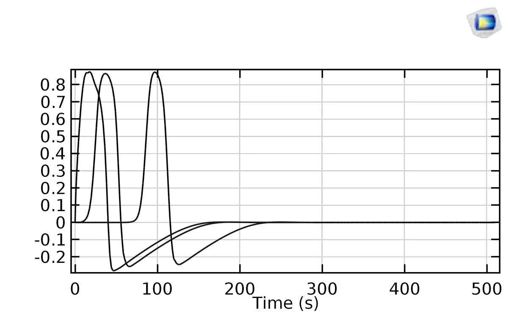
Figure 6a: Excitation variable $u_1(t)$ at the $10\text{ m}$ probe (rapid activation within initial 20 seconds).
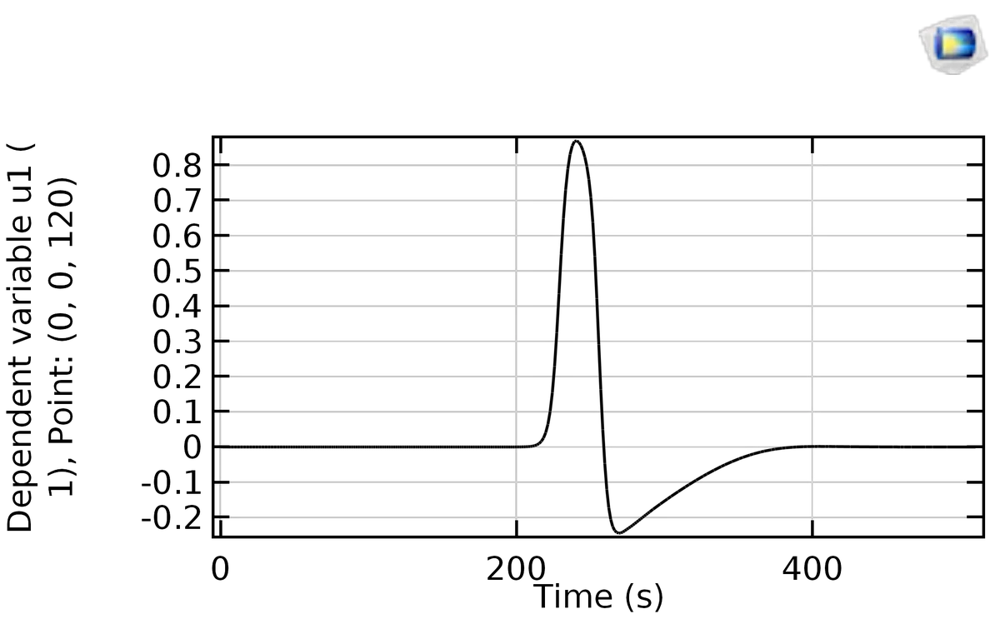
Figure 6b: Excitation variable $u_1(t)$ at the $120\text{ m}$ probe, demonstrating arrival of the intact pulse at $t \approx 220\text{ s}$.
Experiment 2: Periodic Pulse Train Stimulation ($A \cdot \text{rect}(t) + 0.1$)
To model realistic sensory stimulation, an analytical periodic pulse train was applied at the proximal boundary:
$$I_{\text{stim}}(t) = A \cdot \text{rect}_1(t) + 0.1$$
Where $A$ is the pulse amplitude, $W$ is the rectangular pulse width, and $T$ is the stimulus period.
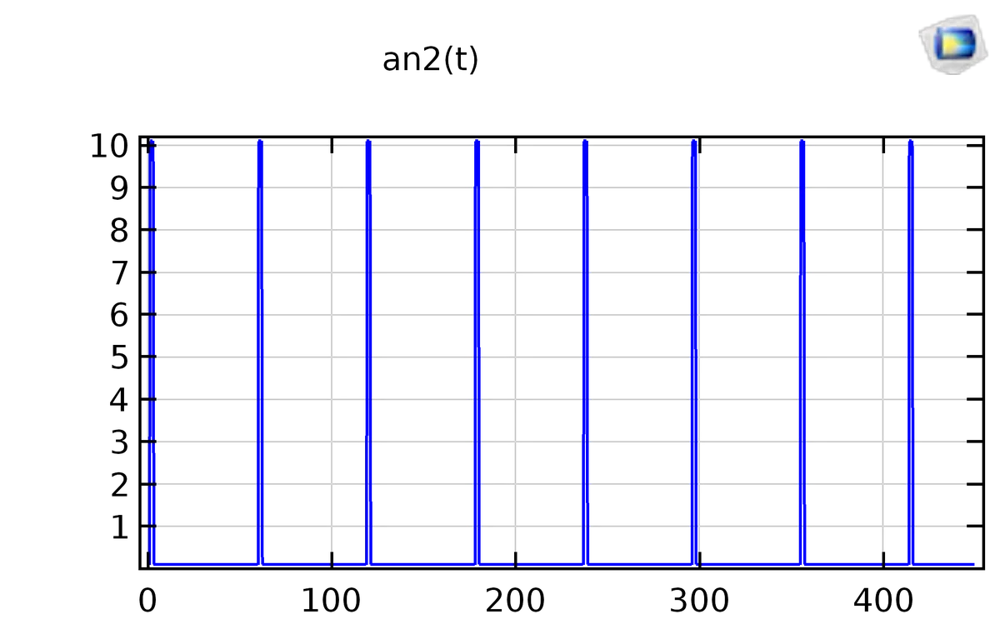
Figure 7: Analytical rectangular pulse train activation function $I_{\text{stim}}(t) = A \cdot \text{rect}_1(t) + 0.1$.
Video Animations of the Simulation
The animated dynamics from both experiments were recorded and uploaded to YouTube:
1. Autonomous Action Potential Propagation
Animated time-evolution showing the initial condition wave traveling autonomously down the 3D axon cylinder.
Watch on YouTube →
2. Pulse Train Re-stimulation
Animated response under periodic train stimulation, showing repetitive wavefront generation and refractory limits.
Watch on YouTube →
Experiment 3: Parameter Sweeps (Threshold, Width, and Frequency Limits)
Systematic parameter sweeps were conducted to evaluate how pulse period ($T$), pulse width ($W$), and amplitude ($A$) govern signal transmission:
Sub-Threshold ($A = 0.1\text{ V}$) vs. Supra-Threshold ($A = 2.0\text{ V}$)
When the injected amplitude is below the excitation threshold ($A = 0.1\text{ V}$, with $T = 40\text{ s}, W = 2\text{ s}$), only the initial condition pulse travels; subsequent stimulus pulses fail to initiate depolarization and are completely eliminated. In contrast, at $A = 2.0\text{ V}$, every stimulus pulse overcomes the threshold barrier and propagates all the way to the $120\text{ m}$ probe:
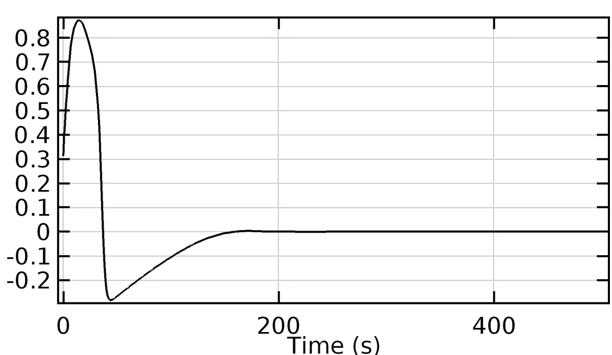
Sub-threshold ($A=0.1\text{ V}$) at $10\text{ m}$: Stimulus pulses fail to evoke full depolarization spikes.
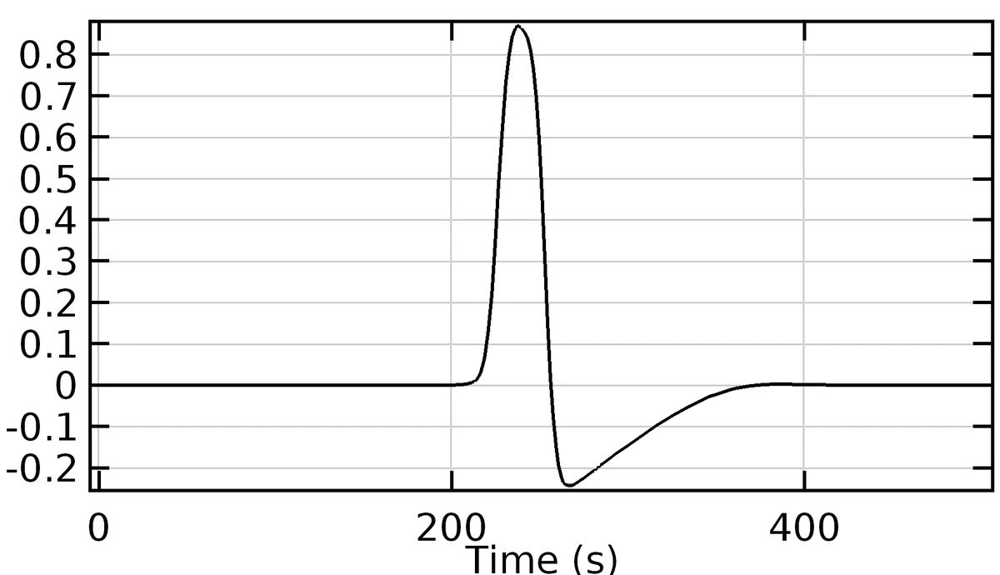
Sub-threshold ($A=0.1\text{ V}$) at $120\text{ m}$: Zero pulses reach the distal end of the axon.
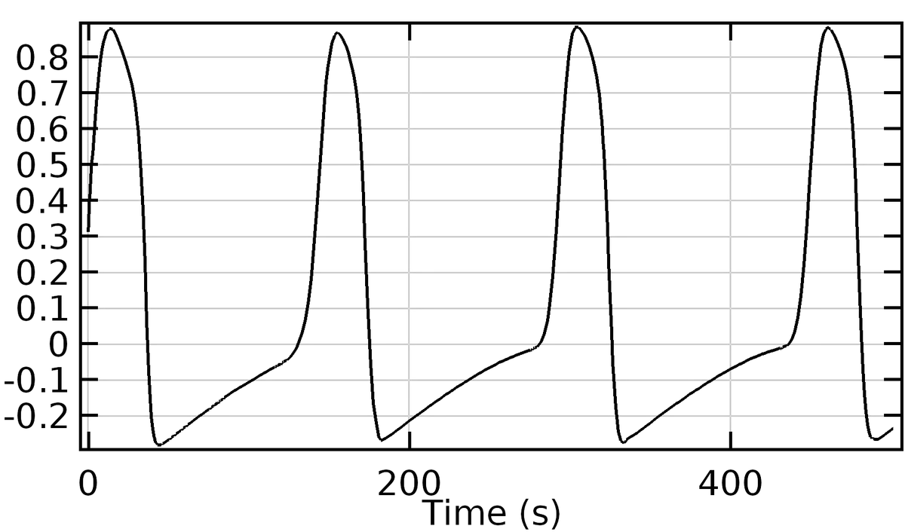
Supra-threshold ($A=2.0\text{ V}$) at $10\text{ m}$: Repetitive full-amplitude action potentials triggered.
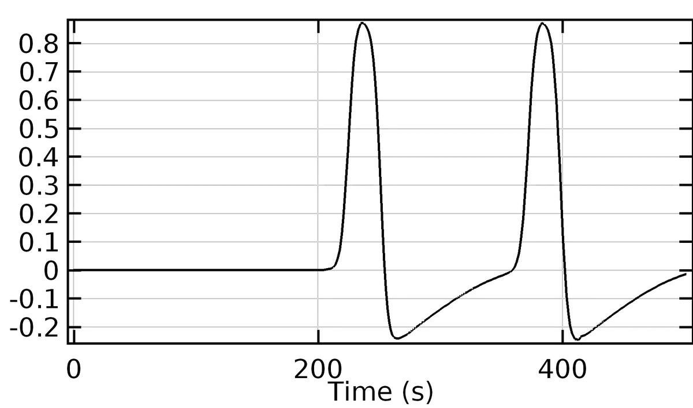
Supra-threshold ($A=2.0\text{ V}$) at $120\text{ m}$: Continuous train of propagated spikes arrives intact.
Refractory Period & Maximum Firing Frequency
When testing stimulus periods from $T = 10\text{ s}$ down to very rapid frequencies, the neuron failed to fire on every cycle. If a stimulus pulse arrives while the recovery variable $u_2$ is still elevated (the relative/absolute refractory period), the sodium-analog excitability is depressed, preventing pulse generation. In biological neurons, this restricts maximum firing rates to approximately $200\text{--}300\text{ Hz}$.
Axon Diameter & Conduction Velocity Discussion
In physical nerve fibers, conduction velocity scales with axon caliber ($v \propto \sqrt{d}$ for unmyelinated fibers). Additional tests varying cylinder diameter (from $0.2\text{ m}$ to $3.0\text{ m}$) showed minimal variations in arrival time at the distal probe ($\sim 200\text{--}220\text{ s}$). This is because the standard FitzHugh-Nagumo reaction-diffusion formulation models the membrane potential field phenomenologically; it does not fully capture the radial internal cable resistance and 3D axial core-conductor electrodynamics without an explicitly resolved thin dielectric membrane boundary layer.
5. Key Takeaways for Computational Electrophysiology
- Phase-Plane Reduction: FitzHugh-Nagumo captures the essential nonlinear dynamics of nerve excitability (threshold, refractory period, all-or-nothing response, pulse propagation) using only two state variables rather than the four complex gating variables of Hodgkin-Huxley.
- FEM Mesh Requirements: In reaction-diffusion problems, the front of the action potential has steep spatial gradients ($\nabla u_1$). Adequate mesh density along the propagation axis is critical to avoid numerical dispersion or artificial conduction block.
- Reproducibility in Open Science: Proprietary multi-megabyte CAD/FEM project binaries (such as COMSOL
.mph files) are often black boxes. Publishing explicit PDE formulations, boundary conditions, parameter sets, and response curves allows students and engineers to reconstruct the physics in any open-source solver (e.g. FEniCS or Python SciPy).
6. Academic References
- Hodgkin, A. L., & Huxley, A. F. (1952). A quantitative description of membrane current and its application to conduction and excitation in nerve. The Journal of Physiology, 117(4), 500–544.
- FitzHugh, R. (1961). Impulses and physiological states in theoretical models of nerve membrane. Biophysical Journal, 1(6), 445–466.
- Nagumo, J., Arimoto, S., & Yoshizawa, S. (1962). An active pulse transmission line simulating nerve axon. Proceedings of the IRE, 50(10), 2061–2070.
- Perez-Macias, J. M. (2016). Axon simulation using FitzHugh-Nagumo approximation. TUT Course Report, Bioelectromagnetism and FEM, BioMediTech & Dept. of Electronics and Communications Engineering, Tampere University of Technology.